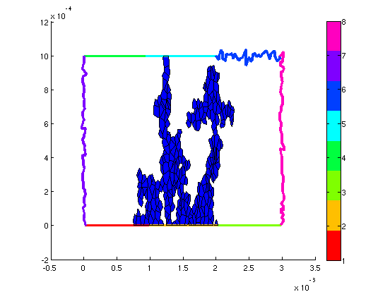
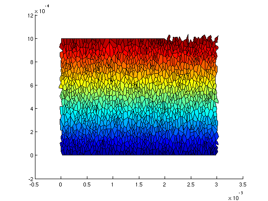
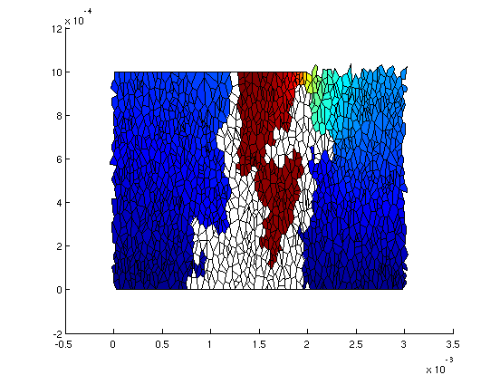

[ network,viewer ]=CreateNetwork('3block2D');
viewer.View('Network')
figure;colorbar;
viewer.View('Boundaries')
Generation du reseau...
Reseau genere. Duree : 0 minutes 3.731118 s.
help ComputeInvasionPercolation
inletLink=network.GetLinksFrontiere(2);
outletLink=network.GetLinksFrontiere([4,5,6]);
[cluster,breakthroughPressure,invasionPressureList]=ComputeInvasionPercolation(network,inletLink,outletLink,'hydrophobic');
class(cluster)
ComputeInvasionPercolation Calcule l'invasion de percolation sur un r�seau
de pores, avec un unique cluster
Input : network,inletLink,outletLink,wettability , ( varargin ) :
- network
- inletLink : liste des liens d'injection
- outletLink : liste des liens de percée possible
- wettability : 'currentWettability', 'hydrophobic', 'hydrophilic' or 'random'.
- varargin (optionnel) : clusterOptions (voir ClusterMonophasique)
Output : [cluster,breakthroughPressure,invasionPressureList]
Running Invasion Percolation
Calcul du diam�tre des liens...
Calcul du diam�tre des liens termin�. Dur�e : 0 minutes 0.397209 s.Calcul d'invasion percolation termine. Duree : 0 minutes 1.045704 s.
ans =
ClusterMonophasique
viewer.View('PoreList',cluster.GetInvadedPores)

complementaryCluster=cluster.GetComplementaryCluster;
boundaryConditions=struct;
boundaryConditions.inletLink = network.GetLinksFrontiere([4,5,6]);
boundaryConditions.outletLink = network.GetLinksFrontiere([1,2,3]);
boundaryConditions.inletType = 'Dirichlet' ;
boundaryConditions.outletType = 'Dirichlet' ;
boundaryConditions.inletValue = 1;
boundaryConditions.outletValue = 0.1;
[ concentrations, ~, ~, diffusionCoefficient ]=ComputeDiffusion(network,complementaryCluster, boundaryConditions);
disp(diffusionCoefficient)
figure
viewer.View('PoreField',concentrations)
Calcul des conductances de Diffusion...
Calcul des conductances de diffusion termine. Duree : 0 minutes 0.001075 s.Solving linear system
Solving linear system finished. Time spent : 0 minutes 0.000580 s.Solving linear system
Solving linear system finished. Time spent : 0 minutes 0.000646 s. 1.3101e-08

fullCluster=network.CreateFullCluster;
[ concentrations, ~, ~, diffusionCoefficient ]=ComputeDiffusion(network,fullCluster, boundaryConditions);
disp(diffusionCoefficient)
figure;
viewer.View('PoreField',concentrations)
Solving linear system
Solving linear system finished. Time spent : 0 minutes 0.001741 s. 1.6587e-08
